Кейс 01
Редизайн формы создания заявки
Форма создания заявки казалась пользователям тяжёлой. Я отказалась от пошаговой формы‑wizard и собрала все параметры на одной странице с понятной логикой.
| Период | 1 полугодие 2026 |
|---|---|
| Продукт | Кабинет грузовладельца |
| Результаты | Расскажу при встрече |

Как было
Пошаговая форма-wizard: параметры заявки разбросаны по вкладкам «Параметры» → «Маршрут» → «Стоимость» → «Итог».
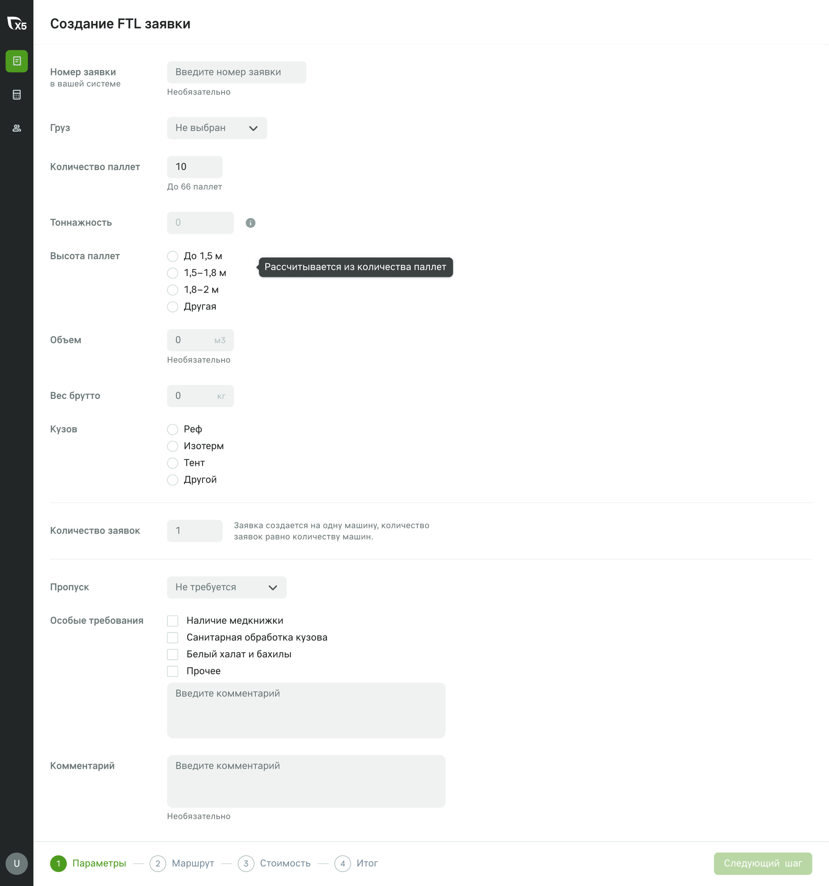
Шаг «Параметры»
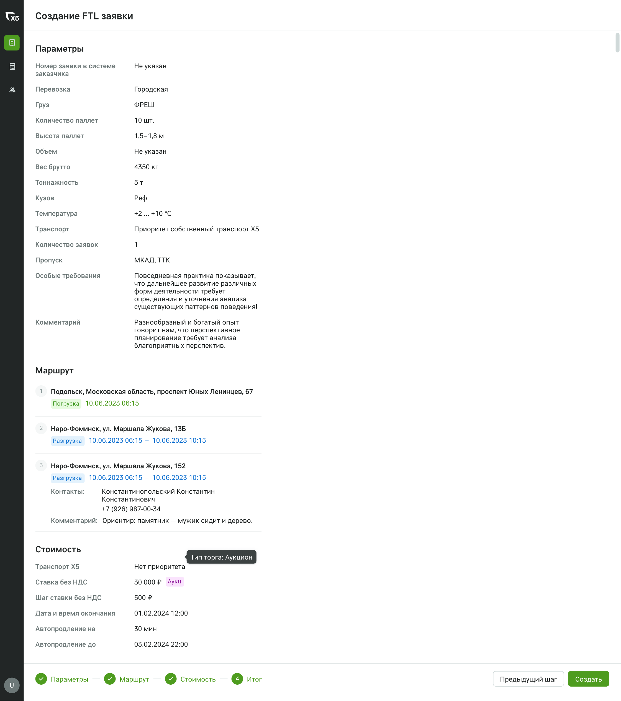
Шаг «Стоимость»
Контекст
X5 Транспорт: грузовладелец создаёт заявку, перевозчик её забирает. Чем проще создать заявку, тем больше заявок и перевозчиков.
Проблема
Низкая конверсия в создание заявки.
Гипотеза
Если форма станет проще, конверсия вырастет, а время создания заявки сократится.
Цель и метрики
Сделать создание заявки проще.
Метрики: конверсия и время создания заявки.
Проблемы
Собрала по наблюдениям и обратной связи за полтора года.
№1
Связанные параметры — на разных шагах
Чтобы заполнить зависимое поле, приходилось возвращаться назад.
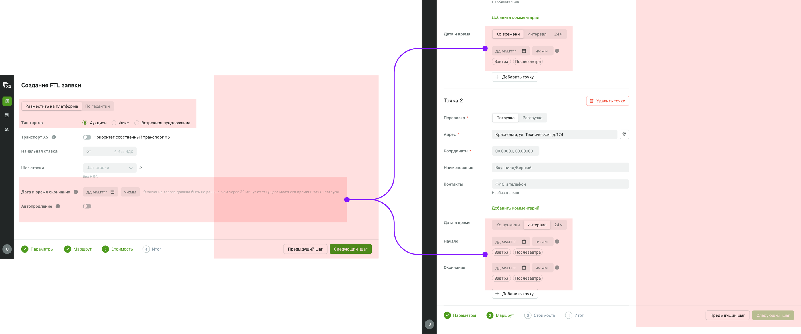
№2
Форма казалась длинной и тяжёлой
Из-за большого количества пустого места пользователи думали, что данные не загрузились.
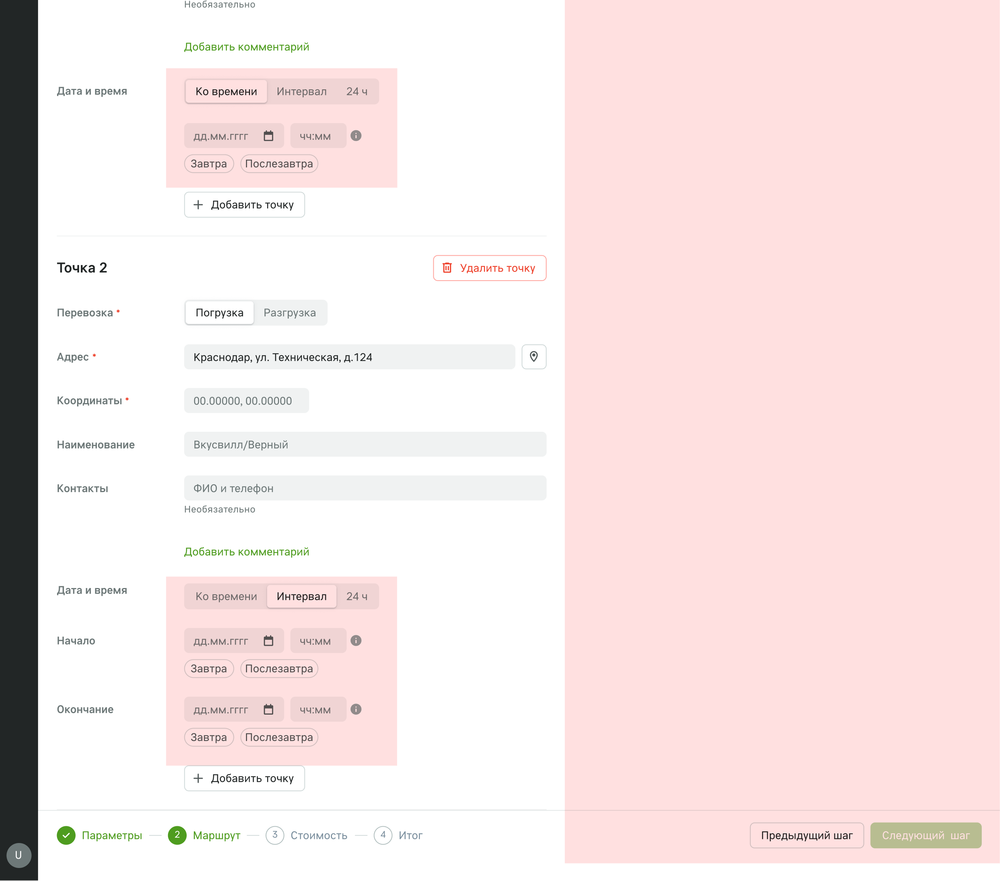
№3
Непонятные термины
Пользователи не знали наших терминов и не пользовались подсказками при наведении.
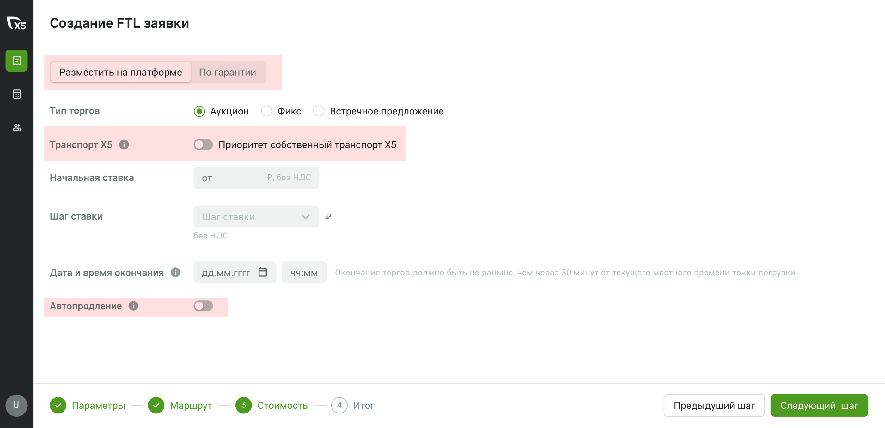
№4
Визуально уступали конкурентам
Сравнила интерфейс с другими логистическими платформами — по аккуратности и понятности мы проигрывали.
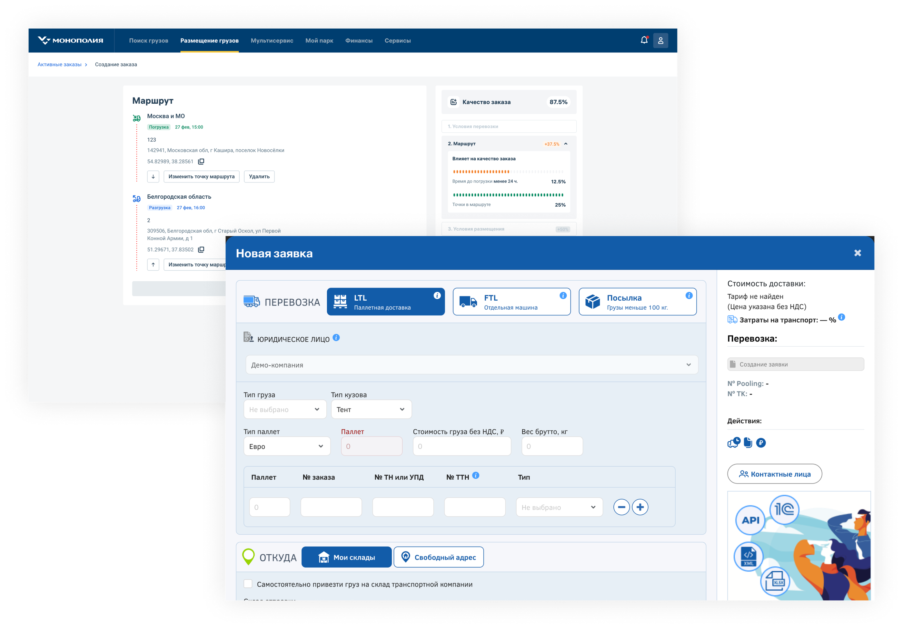
Решения
Изучила, как устроено создание груза у Ati.su, CargoMart, Pooling и Uber Freight, и перенесла лучшие паттерны на наш контекст.
№1
Отказ от wizard и группировка по смыслу
Все параметры на одной странице, в логике «тип перевозки → маршрут → условия → груз → способ размещения». Связанные поля больше не разнесены по вкладкам.
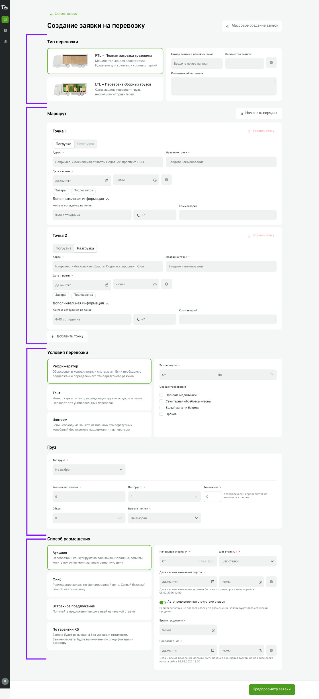
№2
Выбор типа перевозки прямо в форме
Раньше тип выбирался в выпадающем меню до входа в форму. Теперь каждый тип раскрыт пояснением — клиент сам понимает, что ему подходит.
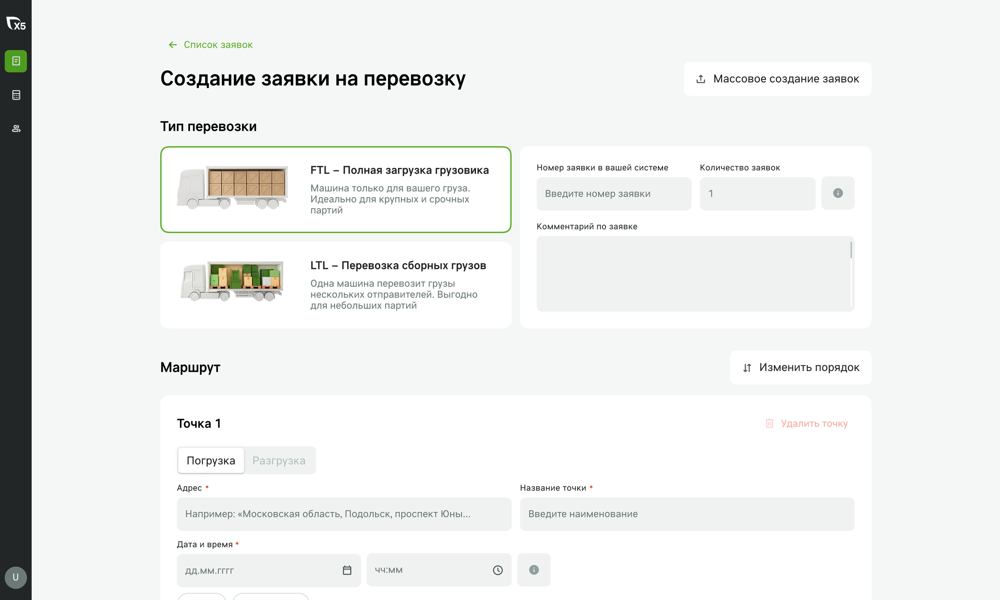
№3
«Что делать дальше»
Клиенты не понимали, как пойдёт работа с заявкой после публикации. Добавила понятные следующие шаги.
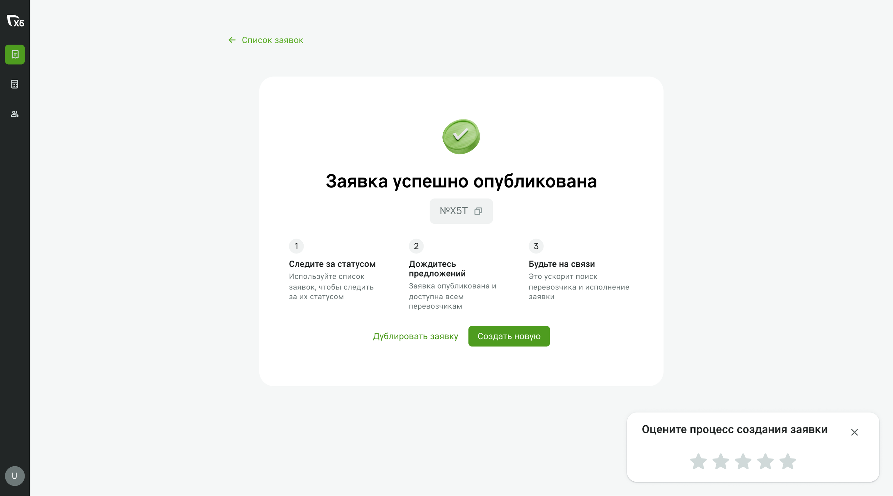
Варианты
Сравнила два подхода.
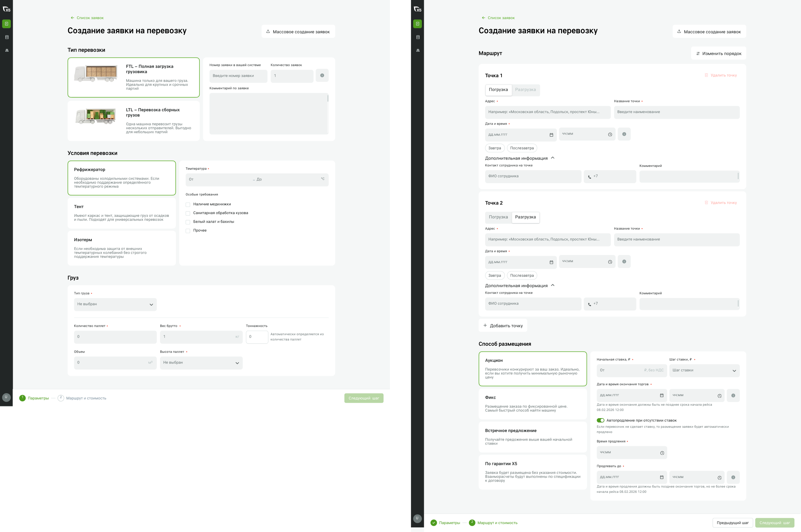
Вариант 1 · два шага
- Связанные параметры ближе друг к другу
- Меньше когнитивного переключения
- Пользователь всё ещё проходит несколько этапов
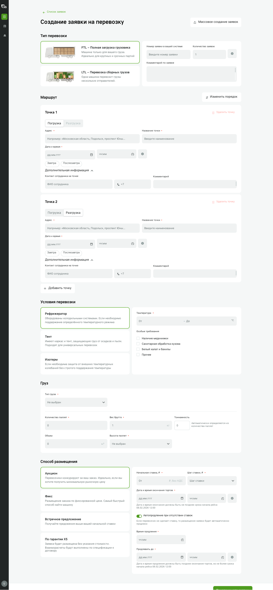
Вариант 2 · одна страница
- Все параметры на одной странице — проще сопоставлять связанные данные
- Риск перегрузить пользователя длинной страницей
Итоговое решение
Был выбран вариант 2. Всё на одной странице, сгруппировано по смыслу: выбор типа заявки с пояснениями, группировка параметров и предпросмотр перед публикацией.
Целевой концепт
Как форма будет расти: новые блоки из бэклога — индикатор качества заказа, рекомендованная стоимость, сохранение шаблона — встают в готовую структуру.
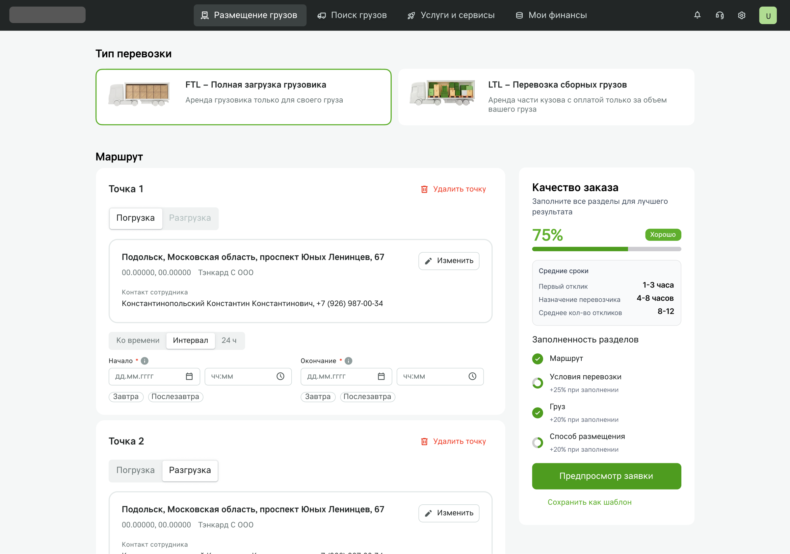
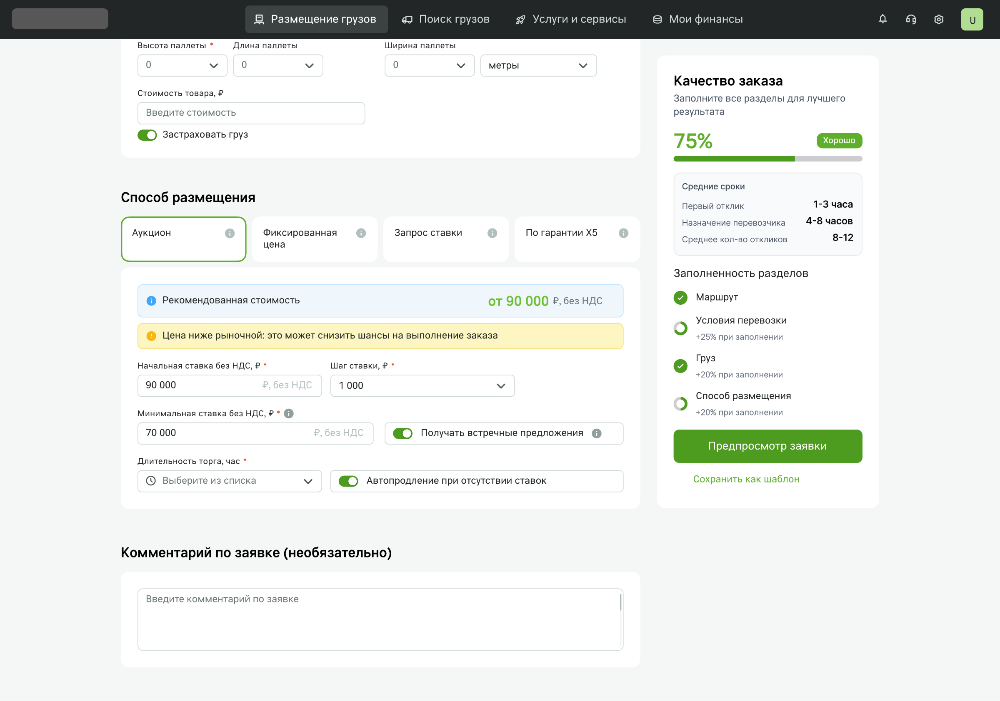
Результаты
Цифры расскажу при встрече: метрики конверсии и времени создания заявки — внутренние данные компании.
Следующий кейс
Демо-версия платформы